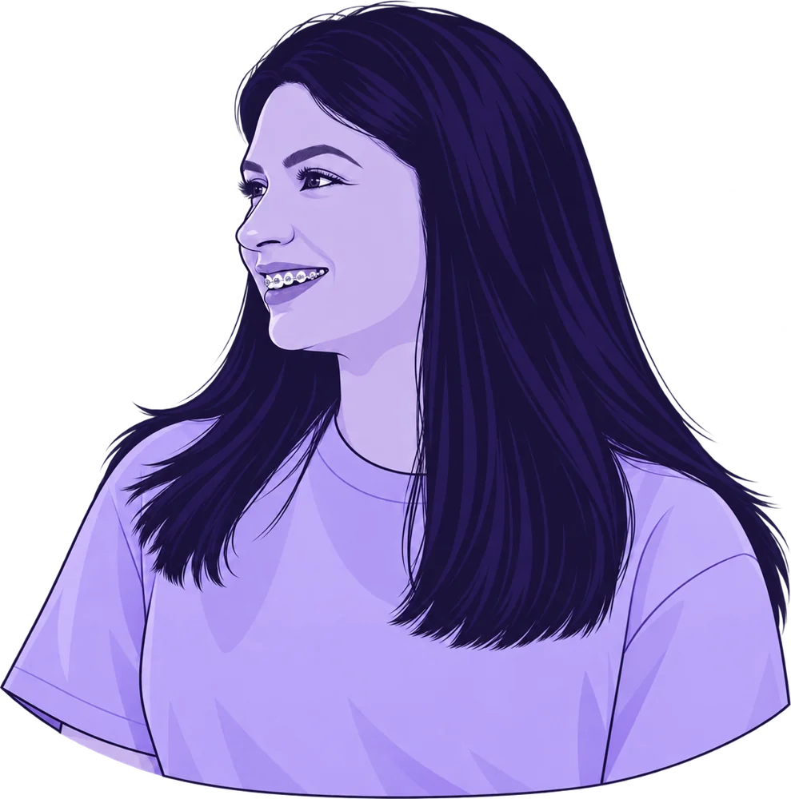
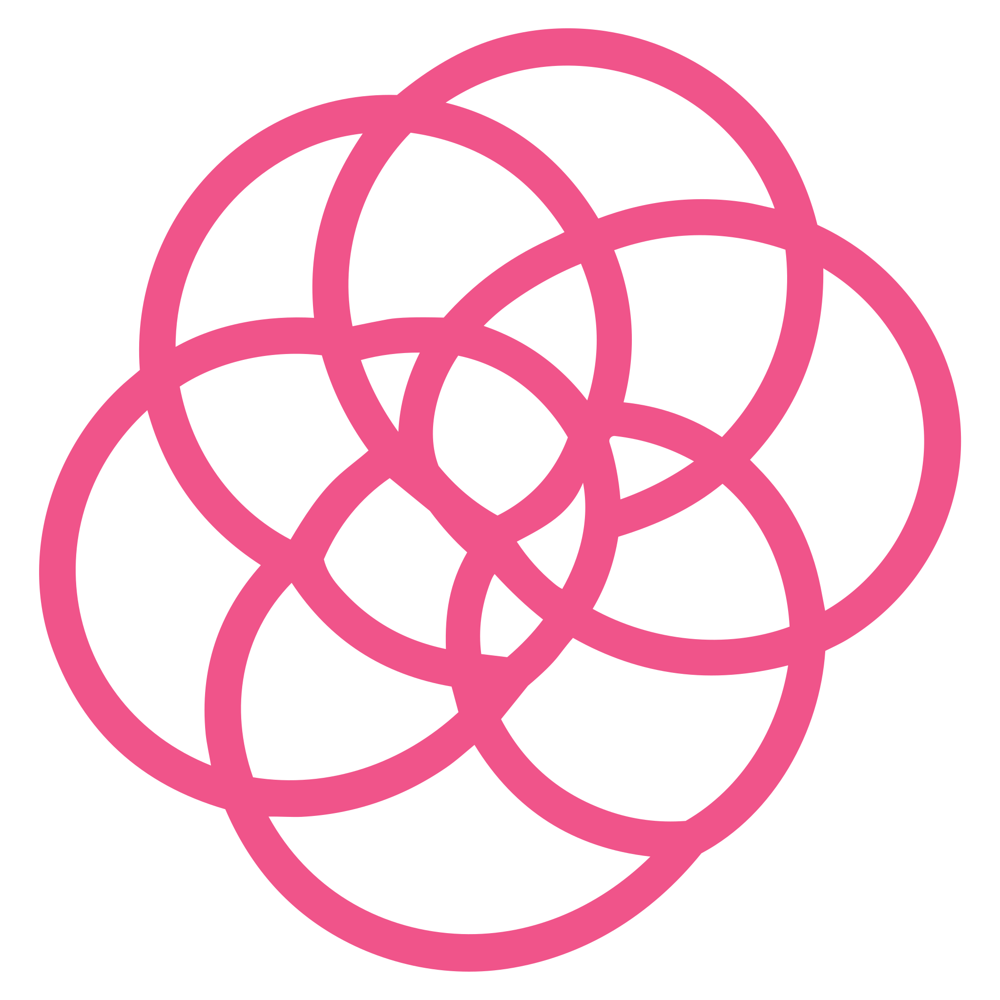
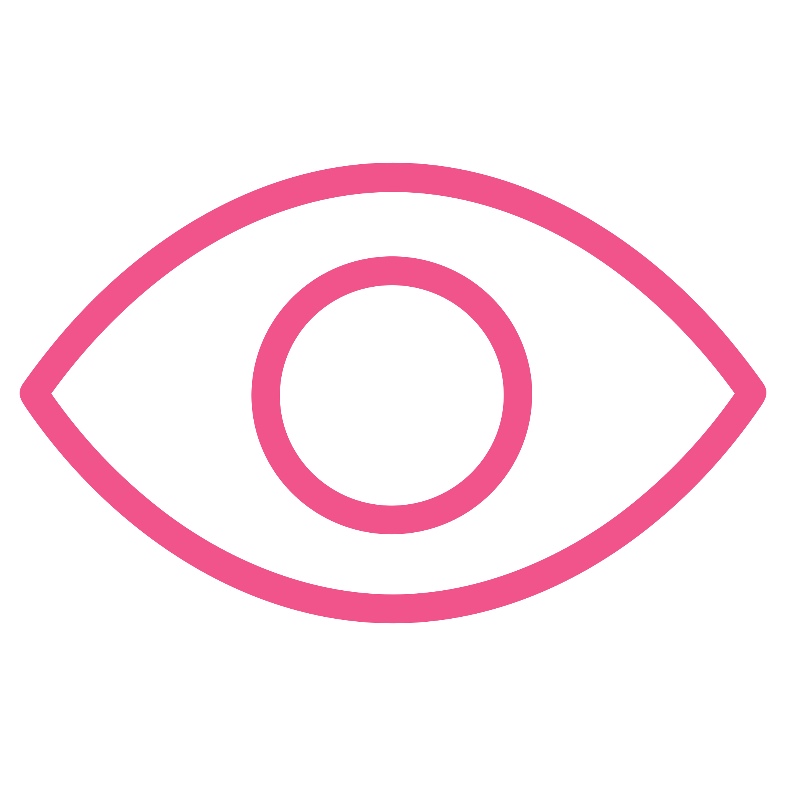
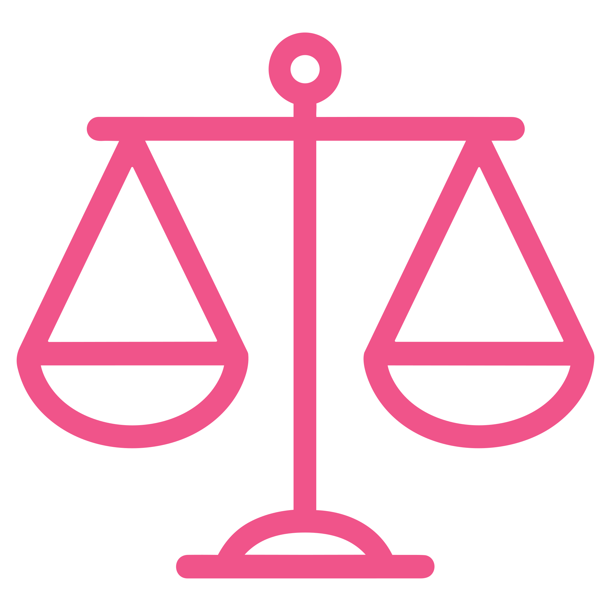
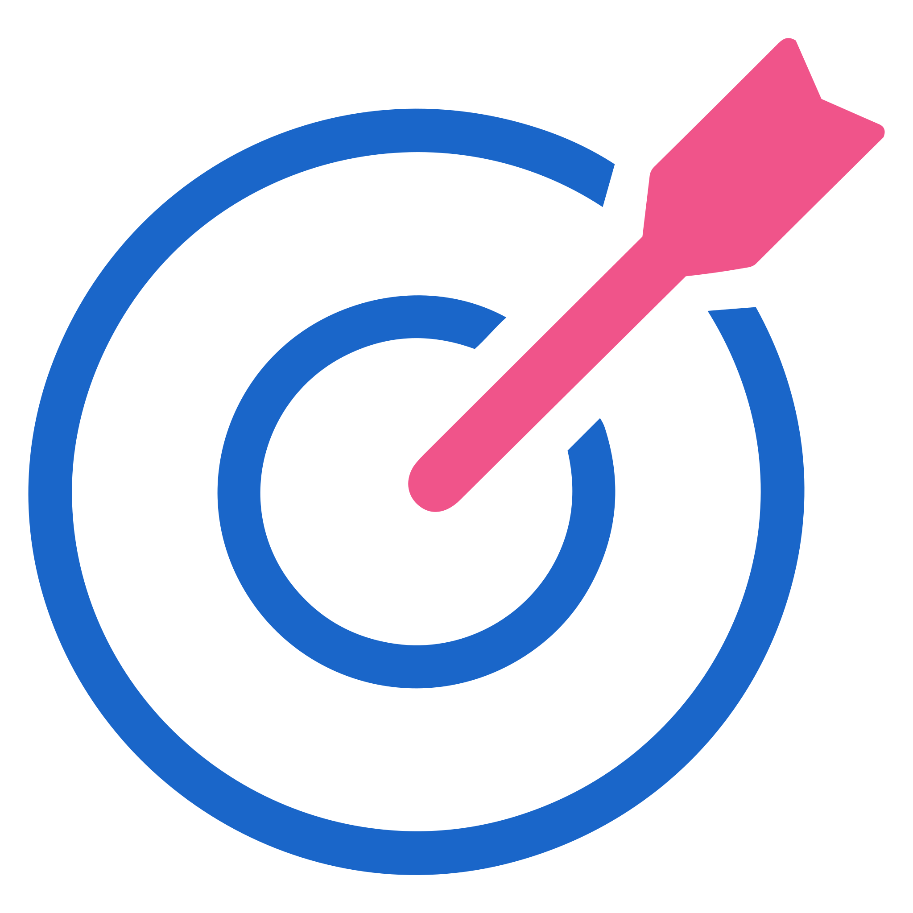
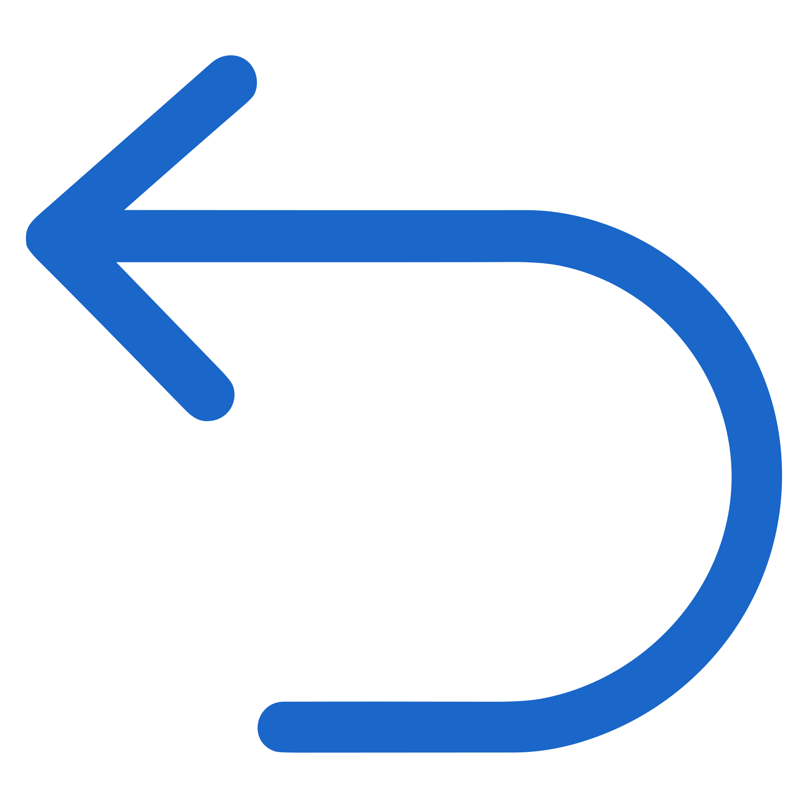

Pesquisa · SIEPE Unoesc · Ergonomia cognitiva
A inteligência é artificial.
A experiência
é humana.
Interfaces com IA que respeitam a atenção, a compreensão e a capacidade de decisão de quem usa.
Explore a experiência
compare os dois lados
Qual interface é mais fácil de entender?
Três situações do dia a dia com IA, cada uma desenhada de dois jeitos. À esquerda, o problema. À direita, o que o design muda.
exemplos ilustrativos: pode clicar!
o que a pesquisa encontrou
Três desafios para a mente
A IA pode ampliar nossas capacidades, mas também traz novos riscos para a experiência.

Sobrecarga
Mais informação do que conseguimos processar.

Opacidade
Decisões sem explicação geram incerteza.

Confiança mal calibrada
Confiar demais, ou de menos, pode levar a escolhas ruins.
e como o design ajuda
Onde o design faz a diferença
As práticas que a pesquisa encontrou na literatura. O design pode:

Mostrar a confiança
Indicar o quanto a IA tem certeza de cada sugestão.
Revelar aos poucos
A informação aparece conforme a pessoa precisa dela.

Permitir desfazer
Dar controle para revisar, ajustar e voltar atrás.
sobre a pesquisa
Da pesquisa à experiência
Revisão bibliográfica narrativa sobre design, inteligência artificial e ergonomia cognitiva.
- Autoras
- Geise Moreira e Valentina Delanoy
- Orientação
- Prof. Eduardo Cipriani Schwengber
- Bases
- Google Acadêmico, SciELO e periódicos de HCI
- Autores-base
- Sweller (1988) e Hollender et al. (2010)
Ler o resumo completo
A importância do profissional de design na criação de interfaces com IA que preservem a ergonomia cognitiva do usuário
Introdução: A ergonomia cognitiva estuda a adequação de sistemas às capacidades de processamento mental do usuário, tendo a carga cognitiva como um de seus conceitos centrais, definida como a demanda de processamento exigida para operar um sistema (Sweller, 1988). A Inteligência Artificial está cada vez mais presente em interfaces, por meio de chatbots, sistemas de recomendação e personalização automática, que nem sempre comunicam com clareza seus critérios de funcionamento. Segundo a literatura revisada, essa falta de transparência pode estar associada a riscos como sobrecarga de informação e confiança mal calibrada, reforçando a importância da curadoria de um profissional de Design. O designer é apontado como responsável por traduzir a capacidade técnica da IA em usabilidade real.
Objetivo: Investigar, por meio de revisão bibliográfica, a importância do designer como mediador entre a capacidade técnica da Inteligência Artificial e uma experiência de uso cognitivamente adequada. Buscou-se levantar os principais riscos cognitivos associados ao uso de IA em interfaces, como sobrecarga, opacidade e confiança mal calibrada; discutir o papel do designer nessa mediação; e identificar práticas de design capazes de mitigar tais riscos.
Método: O desenvolvimento desta pesquisa fundamentou-se em uma revisão bibliográfica de caráter narrativo, realizada em bases como Google Acadêmico, SciELO e periódicos de Interação Humano-Computador (HCI), reunindo estudos sobre a Teoria da Carga Cognitiva e sobre a inserção da Inteligência Artificial no processo de design, com base em Sweller (1988) e Hollender et al. (2010).
Resultados: A pesquisa possibilitou sistematizar os principais riscos cognitivos discutidos na literatura: sobrecarga, opacidade e confiança mal calibrada. Identificaram-se práticas de design associadas à mitigação desses riscos, como a indicação do nível de confiança das sugestões da IA, a divulgação progressiva de informações e a garantia de reversibilidade das ações do sistema. A literatura indica que a atuação do designer contribui para mitigar esses problemas, traduzindo a capacidade técnica da IA em decisões de projeto voltadas às necessidades cognitivas do usuário.
Conclusão: Compreendeu-se como a Inteligência Artificial em interfaces pode ampliar a carga cognitiva do usuário, atendendo ao objetivo geral proposto. Reforçou-se o papel do designer como mediador entre a técnica e a experiência humana, já que a tecnologia por si só não garante boas experiências: é o olhar do designer que a torna acessível e equilibrada. Este trabalho contribuiu para conscientizar empresas de software e o público em geral sobre a importância de integrar profissionais de Design no desenvolvimento de interfaces com IA.